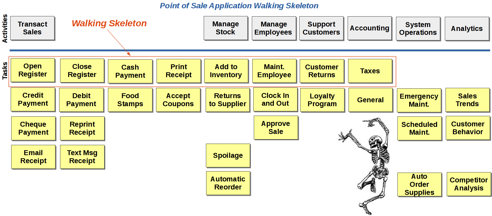

After cloning the repository into $HOME/workspace, you have a directory structure like this:
$HOME/workspace/
|
+---- point-of-sale/
|
+---- install
|
+---- pom.xml
|
+---- (typical Eclipse/Maven directory structure)
|
+---- credit-authorization/
|
+---- app/
|
+---- authserver.rb
The install script installs a few programs needed by the point of sale application, copies scripts into your $HOME/bin directory, and adds $HOME/bin to the PATH.
The credit-authorization directory contains a Ruby application that simulates an external credit authorization service the point of sale application uses to authorize credit and debit card sales. You don't need to modify this application, but you do need to start it and leave it running while you work on the point of sale code. The install script places a script named authserver in your $HOME/bin directory, which you can use to start and stop the credit authorization server. Run authserver start, authserver stop, and authserver restart as needed.
Eclipse is configured with the m2e plugin for Maven support. You can run Maven goals from inside Eclipse by right-clicking on the pom.xml file and selecting a Maven run configuration from the context menu, or from the command line using the mvn command.
The point of sale application uses a MongoDB database. Scripts to start and stop the mongod daemon and to initialize and reset the test data are provided in the point-of-sale directory.
The project is already set up as a git project with the root at point-of-sale. Eclipse is already configured with git support, so you can issue version control commands from within Eclipse or from the command line, as you prefer.
The retail point of sale application is designed help you practice software development techniques in Java. Some of the functionality has already been implemented. Some of the provided code illustrates code smells we often encounter in production code in the wild, presenting you with an opportunity to improve the design as you add new functionality.
The descriptions of the new functionality you will add to the application are provided in the form of user stories, a popular format for describing the desired behavior of software. As you play the stories (that is, implement the functionality), you will discover various opportunities to practice emergent design and to explore the implications of the code transformations you choose as you grow the solution via test-driven development.
If this were a "real" software development project, there would be some degree of up-front analysis and design. With traditional development processes, a comprehensive design would be prepared before beginning coding. With adaptive processes, enough design would be completed ahead of time to give people confidence they were taking the solution in the right direction, and they had a good general idea of the architecture. We take the latter approach here.
Here is a context diagram that shows the application you will be working on. It is the store point of sale system in the center of the diagram. We've provided fake point of sale terminal interfaces, a fake credit authorization system, and a fake purchasing application. Your code will interact with those components, but you will not modify them.
The point of sale system has seven broad areas of functionality and three main actors. Here is a Use Case Diagram to give you an idea of the general types of user interactions the system may support.
A typical lightweight and collaborative analysis technique is to write the desired features (tasks) on cards or sticky notes and arrange them under each broad functional area (activity) until the team and stakeholders agree the most important ones are lined up along the top. The technique is called story mapping. Here is a story map showing the main features to be developed for the point of sale application.

Once the story map has been organized properly, we can see which features ought to be addressed first in order to deliver the highest possible value to stakeholders in the shortest time. If we group the tasks horizontally across the top row of the map, we have the functionality that will provide a working system that has the most critical features in place. This initial implementation is sometimes called a walking skeleton.

The walking skeleton represents a minimal set of features that is usable and valuable to customers. It provides a way to deliver something of value early, before all planned features have been implemented.
A closely-related idea is the notion of a Minimum Viable Product (MVP). This is a minimal implementation that can be put into production to gauge the response of users. Based on feedback from users, we can tweak the design to meet their needs better. The idea comes from the Lean Startup concept, in which an initial solution is put into the market quickly in order to get feedback from real customers to guide further development of the product.
User Stories generally represent the interaction between a person and an application. They describe an interaction from the point of view of the user.
A user type or actor represents a category of user who interacts with the application in particular ways, based on the tasks they need to perform to carry out the responsibilities of their job. Typically, there is a one-to-one correspondence between user types and permissions, or authorization.
Some User Stories deal with interactions that are the same for everyone who is of the same user type. For example, we might write a User Story that describes an interaction between cashiers and the Point of Sale application like this:
As a cashier, I need to sign in to my register So that I can accept payment from customers
It doesn't matter who the cashier is, how they prefer to do their job, or whether they have any physical limitations that affect the way they work; all cashiers sign in in the same way.
Other User Stories describe interactions that differ by individual, even if the individuals are all of the same user type. For example, one customer might prefer to pay cash, another might prefer to use a debit card, another might use Food Stamps, and another might pay by redeeming loyalty points.
To distinguish individual differences like these, we use Personas. A persona is a made-up person who has a backstory, a reason to patronize the store, and preferences about how they want to shop and pay for purchases. Personas help us fine-tune our design to ensure a positive user experience for the people who will depend on our software.
To help make the User Stories meaningful, we have defined several User Types and Personas for the Point of Sale application. The details are documented separately, but here is an overview:

So, we might write a User Story for Alexei, another one for Larissa, and another for Lenny:
As Alexei, I need the store to accept Food Stamps So that I can purchase basic necessities
As Larissa, I need the store to keep plenty of candy in stock So that I can buy candy on the way home from school every day
As Lenny, I need someone to approve alcohol sales So that I can buy booze when Dan is working the register